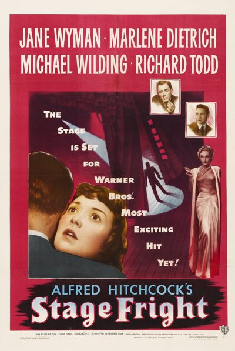

Stage Fright
Starring: Jane Wyman, Marlene Dietrich, Michael Wilding
Director: Alfred Hitchcock
Writer: Ranald MacDougall, Alma Reville
Producer: Alfred Hitchcock
Stage Fright is a 1950 British thriller film noir directed and produced by Alfred Hitchcock and starring Jane Wyman, Marlene Dietrich, Michael Wilding and Richard Todd. The cast also features Alastair Sim, Sybil Thorndike, Kay Walsh, Hitchcock's daughter Pat Hitchcock in her film debut, and Joyce Grenfell in a vignette.
Trivia
- Selected for the National Board of Review: Top Ten Films.
- Though Hitchcock had lived and worked in Hollywood since 1939, this mystery thriller, which is mixed with humour, was made in London locations.
- The only members of the cast who are not British are the two top-billed stars: Wyman and Dietrich.
- Dietrich's costumes were designed by Christian Dior, and the production featured a Cole Porter song, "The Laziest Gal in Town", performed by Dietrich in a sultry fashion.
Previous Showings
6 Runs • 4 Festivals
Original Billings: 1 run (May 11, 1950)
Original Run: May 11, 1950 (Thursday - Saturday)
All runs on record (6):
- May 11, 1950 (Thursday - Saturday)Jane Wyman, Marlene Dietrich
- March 14 - 16, 1992w/ Dial M for Murder
- March 13 - 15, 2000Alfred Hitchcock Film Festivalw/ Mr. and Mrs. Smith
- August 12 - 13, 2004Summer 2004: Sixty-one Classic Movies, including 10 with Ronald Reagan and 9 Silw/ Witness for the Prosecution
- April 13 - 14, 2013The 1950sw/ Witness for the Prosecution
- April 30 - May 1, 2026Hitchcock, The Master of Suspense 2026w/ Suspicion